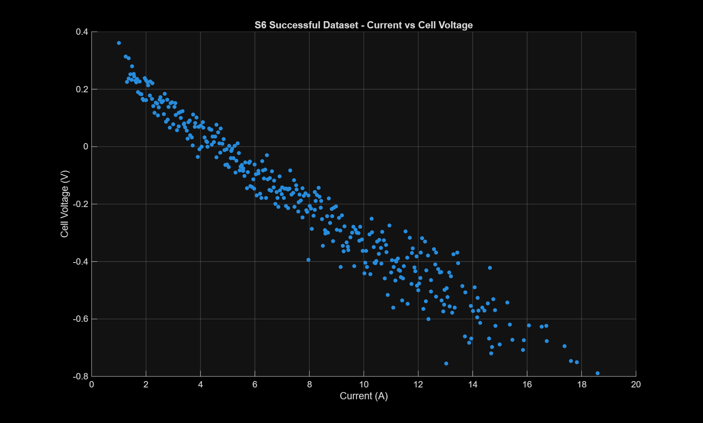
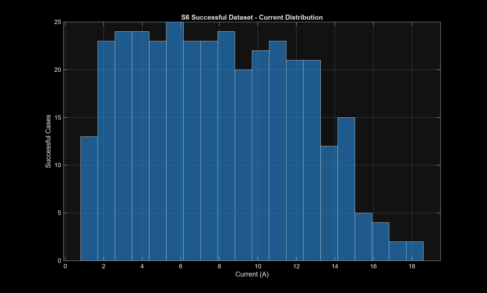
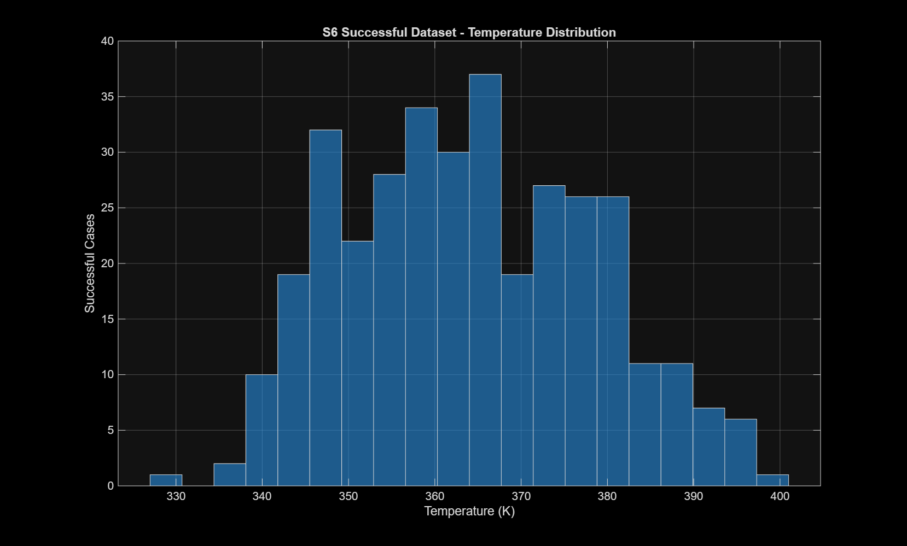

RESEARCH • MACHINE LEARNING
MODEL OUTPUT
PEMFC
ML
ML
Physics-Guided ML Surrogate for PEMFC
A multi-output surrogate model estimating fuel-cell operating outputs from operating conditions, with physical variables guiding the feature set.
0.9990–0.9997Internal test R² range
0.0084 VCell-voltage RMSE
0.238 KTemperature RMSE
Internal simulated-data test split; independent experimental validation is not yet established.



Dataset figures from the supplied project ZIP. They show simulated case coverage, not independent experimental validation.